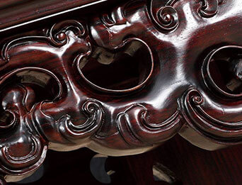

大红酸枝
识。大红酸枝

木色
一般为赤红色或深红色，在空气中氧化可呈暗红色
木纹
木纹质朴美观，有深褐色或黑色直丝状条纹
木香
大红酸枝锯开时，木材散发一种辛香，闻之有酸辛味
木质
坚而重，结构细腻、油质重，可沉于水
问。大红酸枝
1.如何一眼“看”出大红酸枝？
看纹理
在深红色木面上夹有深褐色或者黑色条纹，而且放置时间越久会越接近深紫色甚至黑色。
看白茬
购买时，用小刀在红酸枝家具内侧刮几下，看见木屑落下，如果露出了新红茬，则是大红酸枝木材。反之，如果是白茬，则有可能上油漆或染色的。
看黑筋
浅颜色的大红酸枝有较少黑筋，然而深颜色的大红酸枝黑筋多而明显，与枣红底儿黑红分明。
2.大红酸枝是否可以使用白皮？
国际明文规定，对红木家具白皮的使用量及使用部位有着严格要求，并需要在出售时明示给消费者，并在合同中标明。但一些厂家为了降低生产成本，谋取更大利润，大量使用白皮，并经过“化妆”成大红酸枝，因此购买时需要注意。
3.如何鉴别大红酸枝与红酸枝？
大红酸枝
大红酸枝是红酸枝中的一类别。从木纹、黑筋上看，大红酸枝颜色较深，黑筋较粗大而色深，无鸡翅纹。
红酸枝
红酸枝在材面上轴向薄壁组织常与木射线构成网状，呈现鸡翅纹状，黑筋较少及细小。
3.如何鉴别大红酸枝与红酸枝？
制成贴皮，将大红酸枝刨成单板，贴在家具的表面，因为单板厚度非常薄，所以木材容易开裂，而且裂口的边缘会翘起。
使用劣质心材以次充好或者利用边角料进行拼补家具的部位。
利用红酸枝代替大红酸枝，因红酸枝木类的品种居多，一般人很难分辨，其特点类似大红酸枝，颜色为红色，结构细密，木纹较美，但相比价格却相差三倍以上。
大量使用边材，有一些厂家的工匠师傅会凭借其高超的“手艺”，把没一些有纹理边材白皮，进行上色及绘纹理。1
养。大红酸枝
大红酸枝的养护方式
摆
摆放家具时，应该使用软薄垫将家具同物品的接触部位隔开，同时让家具的靠墙部位跟墙壁保持0.5-1厘米的间隙
蜡
定期打蜡，半年到一年期间内一次，但注意要量少，平时保养只擦家具背面、底面，不擦正面，对家具的水分进行适度封闭即可
擦
尽可能不要使用湿布去擦家具灰尘。首先将家具表面灰尘轻轻拂去，再用干的纯棉布擦，以免颗粒灰尘伤害家具表层
湿
室内要保持适当的湿度。如经常用湿布擦地或使用加湿器、养鱼，这对人与家具都有好处
拭
不能直接用化学清洁 剂、酒精、汽油来擦拭大红酸枝家具。天然的核桃油或蜂蜡等天然保养剂轻轻拭污渍是最正确的
行业资讯